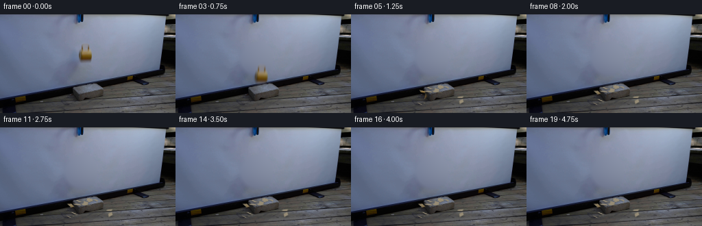
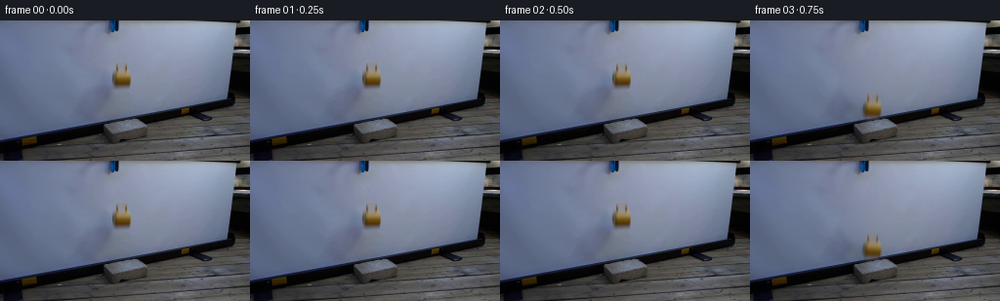
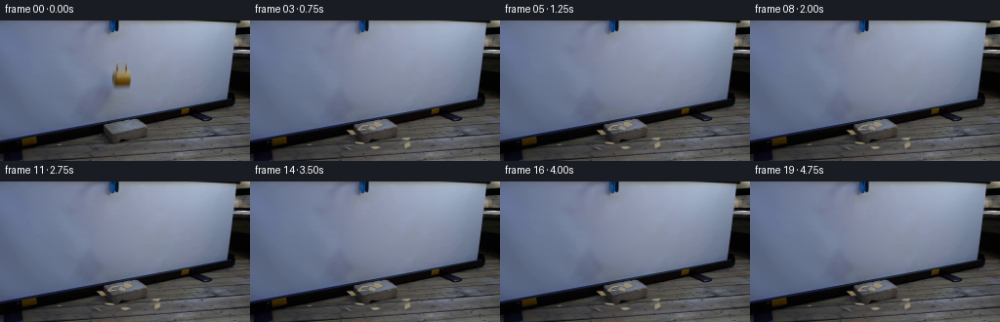
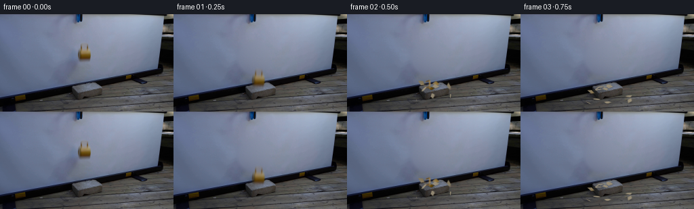
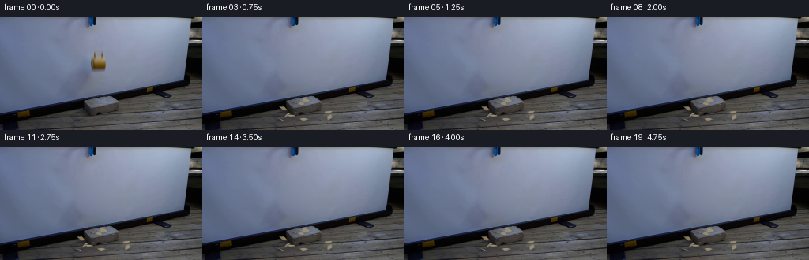

CODING AGENTS AS PIXEL WORLD MODELS
traex/GPT-6.1-Sol · 0124
点击播放 · 原生 RGB 像素
逐轮保存的候选
回放视频、检查图与代码变化。
每份候选均可单独播放。实际图片检查记录在下方工具轨迹中。
候选 01播放与检查图
点击播放 · 原生 RGB 像素


展开代码变化
--- 上一保存版本
+++ 本次保存版本
@@ -0,0 +1,300 @@
+from pathlib import Path
+import math
+import numpy as np
+import cv2
+from PIL import Image
+from scipy.ndimage import gaussian_filter
+import artifact_io
+
+ROOT = Path(__file__).resolve().parent
+H, W = 144, 256
+I = np.array(Image.open(ROOT/'first_frame.png').convert('RGB'), dtype=np.float32)
+Y, X = np.mgrid[:H,:W]
+rng = np.random.default_rng(124)
+
+# The stationary screen is reconstructed only behind the released object.
+def screen_fit():
+ u=(X-120)/40.; v=(Y-63)/40.
+ terms=[np.ones_like(u),u,v,u*u,u*v,v*v,u**3,u*u*v,u*v*v,v**3]
+ design=np.stack(terms,-1)
+ valid=(X>=83)&(X<=158)&(Y>=31)&(Y<=96)
+ valid &= ~((X>=112)&(X<=135)&(Y>=40)&(Y<=73))
+ valid &= ~((X>=94)&(X<=135)&(Y>=52))
+ # Iteratively robust regression preserves the screen's smooth light gradient.
+ a=design[valid]; b=I[valid]; weights=np.ones(len(a))
+ for k in range(5):
+ co=np.linalg.lstsq(a*weights[:,None],b*weights[:,None],rcond=None)[0]
+ err=np.sqrt(np.mean((a@co-b)**2,axis=1))
+ weights=np.minimum(1,2.2/np.maximum(err,0.01))
+ return np.clip(design@co,0,255).astype(np.float32)
+
+B=screen_fit()
+# A feathered local restoration also removes the original object's soft shadow.
+d=((X-118)/24.)**2+((Y-65)/24.)**2
+repair=np.clip((1.32-d)/.52,0,1)
+repair=np.maximum(repair, np.clip((1.12-((X-124)/13.)**2-((Y-55)/17.)**2)/.22,0,1))
+repair *= (Y>=36)&(Y<95)&(X>=89)&(X<=141)
+background=I*(1-repair[...,None])+B*repair[...,None]
+
+# An RGB matte retains the actual glaze, handle, opening and photographic blur.
+sy0,sy1,sx0,sx1=40,72,112,138
+orig=I[sy0:sy1,sx0:sx1]
+bg=B[sy0:sy1,sx0:sx1]
+yy,xx=np.mgrid[sy0:sy1,sx0:sx1]
+blue_rows=np.interp(yy[:,0], [40,43,48,51,52,53,54,55,56,57,58,59,60,62,64,65,66,67,68,69,71],
+ [58,58,52,55,69,94,89,74,63,53,38,22,12,4,4,18,45,68,89,105,130])[:,None]
+alpha=np.clip((bg[...,2]-orig[...,2])/np.maximum(bg[...,2]-blue_rows,20),0,1)
+# Restrict the matte to the mug, excluding the shadow cast on the screen.
+outline=np.array([(121,41),(127,41),(130,44),(131,48),(134,52),(134,64),(133,67),(130,70),(119,70),(115,67),(113,63),(113,55),(116,51),(118,49),(118,44)])
+shape=np.zeros((H*4,W*4),np.uint8)
+cv2.fillPoly(shape,[outline*4],255)
+shape=cv2.resize(shape,(W,H),interpolation=cv2.INTER_AREA)/255.
+shape=gaussian_filter(shape,.65)[sy0:sy1,sx0:sx1]
+alpha*=shape
+alpha=np.where(alpha>.015,alpha,0).astype(np.float32)
+# The smallest legal alpha avoids colour clipping at semi-transparent edges.
+amin=np.maximum(np.max(np.maximum(bg-orig,0)/(bg+.01),axis=-1),
+ np.max(np.maximum(orig-bg,0)/(255-bg+.01),axis=-1))
+alpha=np.maximum(alpha,amin*shape).astype(np.float32)
+fg=np.clip((orig-bg*(1-alpha[...,None]))/np.maximum(alpha[...,None],.015),0,255)
+rgba=np.concatenate([fg*alpha[...,None],alpha[...,None]],axis=-1).astype(np.float32)
+
+# Extract a diffuse screen shadow independently of the rigid mug image.
+shadow=(-np.array([16,10,5],np.float32)[None,None,:]*np.exp(-.5*(((X-105)/10)**2+((Y-70)/12)**2))[...,None])
+shadow+=(-np.array([17,15,12],np.float32)[None,None,:]*np.exp(-.5*(((X-122)/8)**2+((Y-68)/4)**2))[...,None])
+shadow *= repair[...,None]
+
+
+def composite_patch(canvas, patch, M):
+ warped=cv2.warpAffine(patch,M.astype(np.float32),(W,H),flags=cv2.INTER_LINEAR,borderMode=cv2.BORDER_CONSTANT)
+ aa=np.clip(warped[...,3:4],0,1)
+ return canvas*(1-aa)+warped[...,:3]
+
+
+def draw_cup(canvas,dy,theta):
+ ca,sa=math.cos(theta),math.sin(theta)
+ center=np.array([124.,59.])
+ A=np.array([[ca,-sa],[sa,ca]])
+ offset=center+np.array([.8*dy/43,dy])-A@center
+ M=np.column_stack((A,offset+A@np.array([sx0,sy0])))
+ return composite_patch(canvas,rgba,M)
+
+# The source mug is split along irregular brittle fracture lines, not replaced
+# by unrelated sprites. Curved body remnants and sections of the handle survive.
+polygons=[
+ [(118,52),(124,53),(123,58),(118,58)],
+ [(124,53),(130,52),(129,58),(123,58)],
+ [(130,52),(133,53),(133,60),(129,58)],
+ [(118,58),(123,58),(123,63),(117,63)],
+ [(123,58),(129,58),(128,63),(123,63)],
+ [(129,58),(133,60),(132,66),(128,63)],
+ [(117,63),(123,63),(125,66),(120,67),(117,66)],
+ [(123,63),(128,63),(132,66),(127,67),(125,66)],
+ [(114,54),(118,52),(118,58),(116,61),(113,59)],
+ [(113,59),(116,61),(117,66),(114,64)],
+ [(119,43),(124,42),(124,46),(121,47),(120,51),(118,51)],
+ [(124,42),(129,43),(130,47),(129,51),(127,51),(127,46),(124,46)],
+ [(119,49),(121,49),(121,53),(124,54),(119,54)],
+ [(127,49),(130,49),(131,53),(128,54),(127,52)],
+]
+
+# Orthographic analytic 3-D projection matching the block's top face.
+def proj(p):
+ u,v,z=p
+ return np.array([125+u+.75*v,108-.16*u+.60*v-z])
+
+
+def rotation(axis,angle):
+ axis=np.array(axis,dtype=float);axis/=np.linalg.norm(axis)
+ x,y,z=axis; s=math.sin(angle); c=math.cos(angle);d=1-c
+ return np.array([[c+x*x*d,x*y*d-z*s,x*z*d+y*s],
+ [y*x*d+z*s,c+y*y*d,y*z*d-x*s],
+ [z*x*d-y*s,z*y*d+x*s,c+z*z*d]])
+
+
+def ground(u,v):
+ return 0. if (-17<u<17 and -8<v<8) else -12.
+
+class Shard:
+ def __init__(self,poly,index):
+ self.index=index
+ p=np.array(poly,float)
+ self.poly=p
+ self.center=p.mean(0)
+ cx,cy=self.center
+ self.ex=np.array([1.,0.,-.16])
+ self.ey=np.array([0.,0.,-1.])
+ self.local=(p[:,0:1]-cx)*self.ex+(p[:,1:2]-cy)*self.ey
+ self.area=cv2.contourArea(p.astype(np.float32))
+ self.radius=np.sqrt(max(self.area,2))*.26
+ self.pos=np.array([cx-125,.2*rng.normal(),65-cy-.16*(cx-125)])
+ # Momentum from the impact spreads the broken shell around the brick.
+ self.vel=np.array([(cx-123)*5+rng.normal(0,19),rng.normal(0,27),rng.uniform(55,100)])
+ if index==4:self.vel=np.array([23.,3.,60.])
+ if index==10:self.vel=np.array([-42.,12.,74.])
+ if index==11:self.vel=np.array([-17.,19.,83.])
+ self.spin_axis=rng.normal(size=3)
+ self.spin=rng.uniform(9,19)*(-1 if index%2 else 1)
+ self.angle=0.
+ self.R=np.eye(3)
+ self.collisions=0
+ self.rest_angle=rng.uniform(-math.pi,math.pi)
+ self.rest_tilt=rng.uniform(-.20,.25)
+ if index in [0,4,5]:self.rest_tilt=rng.uniform(.28,.55)
+ self.rest_R=rotation([0,0,1],self.rest_angle)@rotation([1,0,0],math.pi/2-self.rest_tilt)
+ self.rest=False
+ self.quiet=0.
+ self.hist=[]
+ # Fine polygon edges become visible only on the broken material.
+ m=np.zeros((32*4,26*4),np.uint8)
+ q=(p-np.array([sx0,sy0]))*4
+ cv2.fillPoly(m,[np.round(q).astype(np.int32)],255)
+ m=cv2.resize(m,(26,32),interpolation=cv2.INTER_AREA).astype(np.float32)/255.
+ ma=np.clip(alpha*1.5,0,1)
+ # Leave transparent space inside the handle intact.
+ if index>=10:ma=np.clip(alpha*1.8,0,1)
+ self.a=(m*ma).astype(np.float32)
+ color=fg.copy()
+ color=gaussian_filter(color,(.32,.32,0))
+ self.front=color
+ # Unglazed fracture backs are warm, pale ceramic, not white debris.
+ noise=rng.normal(0,2,(32,26,1)).astype(np.float32)
+ self.back=np.clip(np.array([156,145,122])[None,None,:]+noise,0,255).astype(np.float32)
+ # Very narrow exposed ceramic edges.
+ er=cv2.erode((m*255).astype(np.uint8),np.ones((2,2),np.uint8))/255.
+ self.edge=np.clip(m-er,0,1)*.26
+
+ def update(self,dt,t):
+ if self.rest:
+ return
+ self.vel[2]-=1000*dt
+ self.pos+=self.vel*dt
+ self.angle+=self.spin*dt
+ self.R=rotation(self.spin_axis,self.angle)
+ floor=ground(self.pos[0],self.pos[1])
+ localz=(self.local@self.R.T)[:,2]
+ bottom=self.pos[2]+localz.min()
+ if bottom<floor+.30 and self.vel[2]<0:
+ self.pos[2]+=floor+.30-bottom
+ self.vel[2]*=-.24 if self.collisions<2 else -.12
+ self.vel[:2]*=.58
+ self.spin*=.55
+ self.collisions+=1
+ if self.collisions>=3 or abs(self.vel[2])<10:
+ # As the thin pieces lose energy they lie down on the surface.
+ self.R=self.rest_R
+ self.pos[2]=floor+.35-(self.local@self.R.T)[:,2].min()
+ self.vel[2]=0
+ self.spin=0
+ self.quiet+=dt
+ speed=np.linalg.norm(self.vel[:2])
+ if speed>0:self.vel[:2]*=max(0,1-100*dt/max(speed,.01))
+ if speed<1.8 or self.quiet>.28:
+ self.vel[:]=0
+ self.rest=True
+ if self.collisions>=3:
+ self.R=self.rest_R
+ floor=ground(self.pos[0],self.pos[1])
+ self.pos[2]=floor+.35-(self.local@self.R.T)[:,2].min()
+ speed=np.linalg.norm(self.vel[:2])
+ if speed>0:self.vel[:2]*=max(0,1-105*dt/max(speed,.01))
+ if speed<1.8:
+ self.vel[:]=0;self.rest=True
+
+ def pose(self):
+ return self.pos.copy(),self.R.copy()
+
+ def render(self,canvas,pose):
+ pos,R=pose
+ c=proj(pos)
+ ex=R@self.ex;ey=R@self.ey
+ dx=np.array([ex[0]+.75*ex[1],-.16*ex[0]+.60*ex[1]-ex[2]])
+ dy=np.array([ey[0]+.75*ey[1],-.16*ey[0]+.60*ey[1]-ey[2]])
+ A=np.stack([dx,dy],axis=1)
+ offset=c-A@(self.center-np.array([sx0,sy0]))
+ M=np.column_stack([A,offset])
+ normal=R@np.array([0.,1.,0.])
+ # Lighting rotates continuously with each ceramic fragment.
+ light=np.array([-.3,-.6,.74]);light/=np.linalg.norm(light)
+ shade=.79+.23*abs(np.dot(normal,light))
+ backness=np.clip((np.dot(normal,np.array([0.,-1.,.5]))+.10)*2.2,0,1)
+ color=self.front*(1-backness)+self.back*backness
+ color=color*(1-self.edge[...,None])+self.back*self.edge[...,None]
+ color=np.clip(color*shade,0,255)
+ patch=np.concatenate([color*self.a[...,None],self.a[...,None]],axis=-1).astype(np.float32)
+ return composite_patch(canvas,patch,M)
+
+shards=[Shard(p,j) for j,p in enumerate(polygons)]
+# Small splinters arise from the same glaze/ceramic, with deterministic variation.
+chips=[]
+for j in range(11):
+ x=rng.uniform(117,132);y=rng.uniform(56,65)
+ radius=rng.uniform(.45,1.10)
+ p=[(x-radius,y),(x+radius*.8,y-radius*.4),(x+radius*.6,y+radius*.7)]
+ chip=Shard(p,14+j)
+ chip.vel=np.array([rng.uniform(-62,67),rng.uniform(-32,39),rng.uniform(65,129)])
+ chip.front[:]=np.array([rng.uniform(127,169),rng.uniform(98,128),rng.uniform(33,70)])
+ chips.append(chip)
+shards+=chips
+
+impact=.5+math.sqrt(2*43/1000)
+target_times=[max(0,i/4-impact) for i in range(20)]
+poses={}
+current=0.
+for i,tar in enumerate(target_times):
+ if i/4<impact:continue
+ while current<tar-1e-8:
+ dt=min(1/480,tar-current)
+ for s in shards:s.update(dt,current)
+ current+=dt
+ poses[i]=[s.pose() for s in shards]
+
+
+def contact_shadows(canvas,ps):
+ sh=np.zeros((H,W),np.float32)
+ for s,(pos,R) in zip(shards,ps):
+ floor=ground(pos[0],pos[1])
+ p=pos.copy();p[2]=floor
+ c=proj(p)
+ z=max(0,pos[2]-floor)
+ width=max(.8,np.sqrt(max(s.area,1))*.48)
+ sx=width+.13*z;sy=max(.45,width*.3)+.04*z
+ opacity=.27*math.exp(-z/17)
+ sh+=opacity*np.exp(-.5*(((X-c[0]-.7)/sx)**2+((Y-c[1]-.5)/sy)**2))
+ return canvas*(1-np.minimum(sh,.48)[...,None])
+
+frames=[]
+for i in range(20):
+ t=i/4
+ if t<=.5:
+ frame=I.copy()
+ elif t<impact:
+ elapsed=t-.5
+ dy=.5*1000*elapsed**2
+ frame=background.copy()
+ moved=cv2.warpAffine(shadow,np.array([[1.,0.,-.10*dy],[0.,1.,.80*dy]],np.float32),(W,H),flags=cv2.INTER_LINEAR)
+ # The shadow fades as the mug approaches the block and leaves the screen.
+ frame+=moved*max(.15,1-dy/56)
+ # Subtle shutter exposure blur, without temporal interpolation of events.
+ samples=[]
+ for e in [-.006,0,.006]:
+ tt=max(0,elapsed+e)
+ samples.append(draw_cup(frame,.5*1000*tt*tt,.20*tt))
+ frame=np.mean(samples,axis=0)
+ else:
+ frame=background.copy()
+ ps=poses[i]
+ frame=contact_shadows(frame,ps)
+ # Depth ordering: farther debris first, nearest surface fragments last.
+ ordering=sorted(range(len(shards)),key=lambda j:(ps[j][0][1],-ps[j][0][2]))
+ for j in ordering:frame=shards[j].render(frame,ps[j])
+ frames.append(np.clip(np.rint(frame),0,255).astype(np.uint8))
+frames=np.stack(frames)
+frames[0]=np.array(Image.open(ROOT/'first_frame.png').convert('RGB'))
+(ROOT/'.tmp').mkdir(exist_ok=True)
+Image.fromarray(np.uint8(np.clip(background,0,255))).save(ROOT/'.tmp/background.png')
+Image.fromarray(np.uint8(np.clip(fg,0,255))).save(ROOT/'.tmp/mug_rgb.png')
+Image.fromarray(np.uint8(alpha*255)).save(ROOT/'.tmp/mug_alpha.png')
+for i in [3,4,5,7,19]:Image.fromarray(frames[i]).save(ROOT/'.tmp'/f'candidate_{i:02}.png')
+np.savez_compressed(ROOT/'.tmp/poses.npz',**{f'frame{k}':np.array([p[0] for p in v]) for k,v in poses.items()})
+artifact_io.save(frames,ROOT)
候选 02播放与检查图
点击播放 · 原生 RGB 像素


展开代码变化
--- 上一保存版本
+++ 本次保存版本
@@ -29,6 +29,11 @@
return np.clip(design@co,0,255).astype(np.float32)
B=screen_fit()
+# Reuse the screen's small-scale photographic grain, rather than a sterile fill.
+grain=I-gaussian_filter(I,(1.1,1.1,0))
+for y in range(36,95):
+ for x in range(89,142):
+ B[y,x]+=grain[y,142+(x*7+y*3)%19]*.8
# A feathered local restoration also removes the original object's soft shadow.
d=((X-118)/24.)**2+((Y-65)/24.)**2
repair=np.clip((1.32-d)/.52,0,1)
@@ -92,16 +97,13 @@
[(123,63),(128,63),(132,66),(127,67),(125,66)],
[(114,54),(118,52),(118,58),(116,61),(113,59)],
[(113,59),(116,61),(117,66),(114,64)],
- [(119,43),(124,42),(124,46),(121,47),(120,51),(118,51)],
- [(124,42),(129,43),(130,47),(129,51),(127,51),(127,46),(124,46)],
- [(119,49),(121,49),(121,53),(124,54),(119,54)],
- [(127,49),(130,49),(131,53),(128,54),(127,52)],
+ [(119,43),(127,42),(130,44),(130,51),(128,54),(120,54),(118,51),(118,45)],
]
# Orthographic analytic 3-D projection matching the block's top face.
def proj(p):
u,v,z=p
- return np.array([125+u+.75*v,108-.16*u+.60*v-z])
+ return np.array([128+u+.75*v,108-.16*u+.60*v-z])
def rotation(axis,angle):
@@ -113,7 +115,7 @@
def ground(u,v):
- return 0. if (-17<u<17 and -8<v<8) else -12.
+ return 0. if (-15<u<15 and -6<v<6) else -12.
class Shard:
def __init__(self,poly,index):
@@ -127,12 +129,11 @@
self.local=(p[:,0:1]-cx)*self.ex+(p[:,1:2]-cy)*self.ey
self.area=cv2.contourArea(p.astype(np.float32))
self.radius=np.sqrt(max(self.area,2))*.26
- self.pos=np.array([cx-125,.2*rng.normal(),65-cy-.16*(cx-125)])
+ self.pos=np.array([cx-128,.2*rng.normal(),65-cy-.16*(cx-128)])
# Momentum from the impact spreads the broken shell around the brick.
self.vel=np.array([(cx-123)*5+rng.normal(0,19),rng.normal(0,27),rng.uniform(55,100)])
if index==4:self.vel=np.array([23.,3.,60.])
- if index==10:self.vel=np.array([-42.,12.,74.])
- if index==11:self.vel=np.array([-17.,19.,83.])
+ if index==10:self.vel=np.array([-32.,13.,80.])
self.spin_axis=rng.normal(size=3)
self.spin=rng.uniform(9,19)*(-1 if index%2 else 1)
self.angle=0.
@@ -141,6 +142,7 @@
self.rest_angle=rng.uniform(-math.pi,math.pi)
self.rest_tilt=rng.uniform(-.20,.25)
if index in [0,4,5]:self.rest_tilt=rng.uniform(.28,.55)
+ if index==10:self.rest_tilt=.48
self.rest_R=rotation([0,0,1],self.rest_angle)@rotation([1,0,0],math.pi/2-self.rest_tilt)
self.rest=False
self.quiet=0.
@@ -149,6 +151,9 @@
m=np.zeros((32*4,26*4),np.uint8)
q=(p-np.array([sx0,sy0]))*4
cv2.fillPoly(m,[np.round(q).astype(np.int32)],255)
+ if index==10:
+ hole=(np.array([(121,44),(127,44),(127,50),(121,50)])-np.array([sx0,sy0]))*4
+ cv2.fillPoly(m,[hole.astype(np.int32)],0)
m=cv2.resize(m,(26,32),interpolation=cv2.INTER_AREA).astype(np.float32)/255.
ma=np.clip(alpha*1.5,0,1)
# Leave transparent space inside the handle intact.
@@ -237,7 +242,10 @@
chips.append(chip)
shards+=chips
-impact=.5+math.sqrt(2*43/1000)
+release=.02
+v_initial=70.
+gravity=850.
+impact=release+(-v_initial+math.sqrt(v_initial*v_initial+2*gravity*43))/gravity
target_times=[max(0,i/4-impact) for i in range(20)]
poses={}
current=0.
@@ -266,11 +274,11 @@
frames=[]
for i in range(20):
t=i/4
- if t<=.5:
+ if t<=release:
frame=I.copy()
elif t<impact:
- elapsed=t-.5
- dy=.5*1000*elapsed**2
+ elapsed=t-release
+ dy=v_initial*elapsed+.5*gravity*elapsed**2
frame=background.copy()
moved=cv2.warpAffine(shadow,np.array([[1.,0.,-.10*dy],[0.,1.,.80*dy]],np.float32),(W,H),flags=cv2.INTER_LINEAR)
# The shadow fades as the mug approaches the block and leaves the screen.
@@ -279,7 +287,7 @@
samples=[]
for e in [-.006,0,.006]:
tt=max(0,elapsed+e)
- samples.append(draw_cup(frame,.5*1000*tt*tt,.20*tt))
+ samples.append(draw_cup(frame,v_initial*tt+.5*gravity*tt*tt,.20*tt))
frame=np.mean(samples,axis=0)
else:
frame=background.copy()
候选 03播放与检查图
点击播放 · 原生 RGB 像素

展开代码变化
--- 上一保存版本
+++ 本次保存版本
@@ -115,7 +115,12 @@
def ground(u,v):
- return 0. if (-15<u<15 and -6<v<6) else -12.
+ if -15<u<15 and -6<v<6:
+ return 0.
+ # Outside the brick, the finite table's near surface receives the pieces.
+ x=128+u+.75*v
+ y=108-.16*u+.60*v+12
+ return -12-max(0.,140-.23*x-y+1.5)
class Shard:
def __init__(self,poly,index):
@@ -133,7 +138,7 @@
# Momentum from the impact spreads the broken shell around the brick.
self.vel=np.array([(cx-123)*5+rng.normal(0,19),rng.normal(0,27),rng.uniform(55,100)])
if index==4:self.vel=np.array([23.,3.,60.])
- if index==10:self.vel=np.array([-32.,13.,80.])
+ if index==10:self.vel=np.array([-48.,19.,84.])
self.spin_axis=rng.normal(size=3)
self.spin=rng.uniform(9,19)*(-1 if index%2 else 1)
self.angle=0.
可观测工具轨迹
实际执行的命令与返回图片。
命令 1exit 0
/bin/bash -lc "ls -la && cat prompt.txt && printf '\\n---RULES---\\n' && cat GENERATION_RULES.md"
命令 2exit 0
/bin/bash -lc "cat artifact_io.py && python - <<'PY'
from PIL import Image
import numpy as np
im=np.array(Image.open('first_frame.png'))
print(im.shape)
print('bounds',im.min((0,1)),im.max((0,1)))
# sample coarse rgb grid
for y in range(0,144,8):
print('y=',y, [tuple(im[y,x]) for x in range(0,256,12)])
PY"命令 3exit 0
/bin/bash -lc "python - <<'PY'
from PIL import Image
import numpy as np
im=np.array(Image.open('first_frame.png')).astype(float)
# 2x2 averages labels blue= screen; black; yellow
for y in range(0,144,2):
line=''
for x in range(0,256,2):
r,g,b=im[y:y+2,x:x+2].mean((0,1))
if r-b>18 and g-b>10: c='Y' if r>90 else 'y'
elif r<35 and g<35 and b<45:c='#'
elif b>r+15: c='.' if r>75 else ':'
elif r>170:c='O'
elif r>110:c='o'
elif r>70:c='+'
elif r>40:c='-'
else:c='x'
line+=c
print(f'{y:3} {line}')
PY"命令 4exit 0
/bin/bash -lc "python - <<'PY'
from PIL import Image
import numpy as np
I=np.array(Image.open('first_frame.png')).astype(float)
chars=' .:-=+*#%@'
for y in range(0,80):
line=''
for x in range(85,149):
r,g,b=I[y,x]
if r-b>16 and g-b>10:c='Y' if r>120 else 'y'
else:c=chars[min(9,int((r+g+b)/3/220*10))]
line+=c
print(f'{y:3} {line}')
print('RGB center')
for y in range(36,73):
print(y, ' '.join('%d,%d,%d'%tuple(I[y,x]) for x in range(112,140,2)))
PY"命令 5exit 0
/bin/bash -lc "python - <<'PY'
from PIL import Image
import numpy as np
im=np.array(Image.open('first_frame.png')).astype(float)
for reg in [(96,140,93,168),(35,74,107,140),(0,44,105,141)]:
y0,y1,x0,x1=reg
print('\\nregion',reg)
for y in range(y0,y1):
a='';b=''
for x in range(x0,x1):
r,g,bl=im[y,x]
a+=' .:-=+*#%@'[min(9,int((r+g+bl)/3/210*10))]
if r-bl>15:c='Y' if r>100 else 'y'
elif bl-r>25:c='B'
elif bl-r>10:c='b'
elif r<40:c='#'
elif r>135:c='o'
else:c='-'
b+=c
print('%3d'%y,a,b)
PY"命令 6exit 0
/bin/bash -lc "python - <<'PY'
from PIL import Image
import numpy as np
I=np.array(Image.open('first_frame.png'))
# full-pixel brick area luminance
for y in range(97,132):
print(f'{y:3} '+''.join(' .,:;irsXA253hMHGS#9B&@'[min(21,int(I[y,x].mean()/150*22))] for x in range(96,165)))
# rows cup in detailed brightness and yellow intensity
for y in range(40,74):
vals=[]
for x in range(112,139):
r,g,b=map(int,I[y,x]);vals.append(f'{r-b:3}')
print(y,' '.join(vals))
PY"命令 7exit 0
/bin/bash -lc "python - <<'PY'
import numpy as np
from PIL import Image
I=np.asarray(Image.open('first_frame.png'))
for y in [38,42,44,48,52,56,60,64,68,72,76,80,84,88,92,96]:
print(y, [(x,tuple(map(int,I[y,x]))) for x in [90,95,100,105,110,115,120,125,130,135,140,145,150]])
PY"命令 8exit 0
/bin/bash -lc "python - <<'PY' import importlib.util for x in ['scipy','cv2']: print(x, bool(importlib.util.find_spec(x))) PY"
命令 9exit 0
/bin/bash -lc "cat > generate.py <<'PY'
from pathlib import Path
import math
import numpy as np
import cv2
from PIL import Image
from scipy.ndimage import gaussian_filter
import artifact_io
ROOT = Path(__file__).resolve().parent
H, W = 144, 256
I = np.array(Image.open(ROOT/'first_frame.png').convert('RGB'), dtype=np.float32)
Y, X = np.mgrid[:H,:W]
rng = np.random.default_rng(124)
# The stationary screen is reconstructed only behind the released object.
def screen_fit():
u=(X-120)/40.; v=(Y-63)/40.
terms=[np.ones_like(u),u,v,u*u,u*v,v*v,u**3,u*u*v,u*v*v,v**3]
design=np.stack(terms,-1)
valid=(X>=83)&(X<=158)&(Y>=31)&(Y<=96)
valid &= ~((X>=112)&(X<=135)&(Y>=40)&(Y<=73))
valid &= ~((X>=94)&(X<=135)&(Y>=52))
# Iteratively robust regression preserves the screen's smooth light gradient.
a=design[valid]; b=I[valid]; weights=np.ones(len(a))
for k in range(5):
co=np.linalg.lstsq(a*weights[:,None],b*weights[:,None],rcond=None)[0]
err=np.sqrt(np.mean((a@co-b)**2,axis=1))
weights=np.minimum(1,2.2/np.maximum(err,0.01))
return np.clip(design@co,0,255).astype(np.float32)
B=screen_fit()
# A feathered local restoration also removes the original object's soft shadow.
d=((X-118)/24.)**2+((Y-65)/24.)**2
repair=np.clip((1.32-d)/.52,0,1)
repair=np.maximum(repair, np.clip((1.12-((X-124)/13.)**2-((Y-55)/17.)**2)/.22,0,1))
repair *= (Y>=36)&(Y<95)&(X>=89)&(X<=141)
background=I*(1-repair[...,None])+B*repair[...,None]
# An RGB matte retains the actual glaze, handle, opening and photographic blur.
sy0,sy1,sx0,sx1=40,72,112,138
orig=I[sy0:sy1,sx0:sx1]
bg=B[sy0:sy1,sx0:sx1]
yy,xx=np.mgrid[sy0:sy1,sx0:sx1]
blue_rows=np.interp(yy[:,0], [40,43,48,51,52,53,54,55,56,57,58,59,60,62,64,65,66,67,68,69,71],
[58,58,52,55,69,94,89,74,63,53,38,22,12,4,4,18,45,68,89,105,130])[:,None]
alpha=np.clip((bg[...,2]-orig[...,2])/np.maximum(bg[...,2]-blue_rows,20),0,1)
# Restrict the matte to the mug, excluding the shadow cast on the screen.
outline=np.array([(121,41),(127,41),(130,44),(131,48),(134,52),(134,64),(133,67),(130,70),(119,70),(115,67),(113,63),(113,55),(116,51),(118,49),(118,44)])
shape=np.zeros((H*4,W*4),np.uint8)
cv2.fillPoly(shape,[outline*4],255)
shape=cv2.resize(shape,(W,H),interpolation=cv2.INTER_AREA)/255.
shape=gaussian_filter(shape,.65)[sy0:sy1,sx0:sx1]
alpha*=shape
alpha=np.where(alpha>.015,alpha,0).astype(np.float32)
# The smallest legal alpha avoids colour clipping at semi-transparent edges.
amin=np.maximum(np.max(np.maximum(bg-orig,0)/(bg+.01),axis=-1),
np.max(np.maximum(orig-bg,0)/(255-bg+.01),axis=-1))
alpha=np.maximum(alpha,amin*shape).astype(np.float32)
fg=np.clip((orig-bg*(1-alpha[...,None]))/np.maximum(alpha[...,None],.015),0,255)
rgba=np.concatenate([fg*alpha[...,None],alpha[...,None]],axis=-1).astype(np.float32)
# Extract a diffuse screen shadow independently of the rigid mug image.
shadow=(-np.array([16,10,5],np.float32)[None,None,:]*np.exp(-.5*(((X-105)/10)**2+((Y-70)/12)**2))[...,None])
shadow+=(-np.array([17,15,12],np.float32)[None,None,:]*np.exp(-.5*(((X-122)/8)**2+((Y-68)/4)**2))[...,None])
shadow *= repair[...,None]
def composite_patch(canvas, patch, M):
warped=cv2.warpAffine(patch,M.astype(np.float32),(W,H),flags=cv2.INTER_LINEAR,borderMode=cv2.BORDER_CONSTANT)
aa=np.clip(warped[...,3:4],0,1)
return canvas*(1-aa)+warped[...,:3]
def draw_cup(canvas,dy,theta):
ca,sa=math.cos(theta),math.sin(theta)
center=np.array([124.,59.])
A=np.array([[ca,-sa],[sa,ca]])
offset=center+np.array([.8*dy/43,dy])-A@center
M=np.column_stack((A,offset+A@np.array([sx0,sy0])))
return composite_patch(canvas,rgba,M)
# The source mug is split along irregular brittle fracture lines, not replaced
# by unrelated sprites. Curved body remnants and sections of the handle survive.
polygons=[
[(118,52),(124,53),(123,58),(118,58)],
[(124,53),(130,52),(129,58),(123,58)],
[(130,52),(133,53),(133,60),(129,58)],
[(118,58),(123,58),(123,63),(117,63)],
[(123,58),(129,58),(128,63),(123,63)],
[(129,58),(133,60),(132,66),(128,63)],
[(117,63),(123,63),(125,66),(120,67),(117,66)],
[(123,63),(128,63),(132,66),(127,67),(125,66)],
[(114,54),(118,52),(118,58),(116,61),(113,59)],
[(113,59),(116,61),(117,66),(114,64)],
[(119,43),(124,42),(124,46),(121,47),(120,51),(118,51)],
[(124,42),(129,43),(130,47),(129,51),(127,51),(127,46),(124,46)],
[(119,49),(121,49),(121,53),(124,54),(119,54)],
[(127,49),(130,49),(131,53),(128,54),(127,52)],
]
# Orthographic analytic 3-D projection matching the block's top face.
def proj(p):
u,v,z=p
return np.array([125+u+.75*v,108-.16*u+.60*v-z])
def rotation(axis,angle):
axis=np.array(axis,dtype=float);axis/=np.linalg.norm(axis)
x,y,z=axis; s=math.sin(angle); c=math.cos(angle);d=1-c
return np.array([[c+x*x*d,x*y*d-z*s,x*z*d+y*s],
[y*x*d+z*s,c+y*y*d,y*z*d-x*s],
[z*x*d-y*s,z*y*d+x*s,c+z*z*d]])
def ground(u,v):
return 0. if (-17<u<17 and -8<v<8) else -12.
class Shard:
def __init__(self,poly,index):
self.index=index
p=np.array(poly,float)
self.poly=p
self.center=p.mean(0)
cx,cy=self.center
self.ex=np.array([1.,0.,-.16])
self.ey=np.array([0.,0.,-1.])
self.local=(p[:,0:1]-cx)*self.ex+(p[:,1:2]-cy)*self.ey
self.area=cv2.contourArea(p.astype(np.float32))
self.radius=np.sqrt(max(self.area,2))*.26
self.pos=np.array([cx-125,.2*rng.normal(),65-cy-.16*(cx-125)])
# Momentum from the impact spreads the broken shell around the brick.
self.vel=np.array([(cx-123)*5+rng.normal(0,19),rng.normal(0,27),rng.uniform(55,100)])
if index==4:self.vel=np.array([23.,3.,60.])
if index==10:self.vel=np.array([-42.,12.,74.])
if index==11:self.vel=np.array([-17.,19.,83.])
self.spin_axis=rng.normal(size=3)
self.spin=rng.uniform(9,19)*(-1 if index%2 else 1)
self.angle=0.
self.R=np.eye(3)
self.collisions=0
self.rest_angle=rng.uniform(-math.pi,math.pi)
self.rest_tilt=rng.uniform(-.20,.25)
if index in [0,4,5]:self.rest_tilt=rng.uniform(.28,.55)
self.rest_R=rotation([0,0,1],self.rest_angle)@rotation([1,0,0],math.pi/2-self.rest_tilt)
self.rest=False
self.quiet=0.
self.hist=[]
# Fine polygon edges become visible only on the broken material.
m=np.zeros((32*4,26*4),np.uint8)
q=(p-np.array([sx0,sy0]))*4
cv2.fillPoly(m,[np.round(q).astype(np.int32)],255)
m=cv2.resize(m,(26,32),interpolation=cv2.INTER_AREA).astype(np.float32)/255.
ma=np.clip(alpha*1.5,0,1)
# Leave transparent space inside the handle intact.
if index>=10:ma=np.clip(alpha*1.8,0,1)
self.a=(m*ma).astype(np.float32)
color=fg.copy()
color=gaussian_filter(color,(.32,.32,0))
self.front=color
# Unglazed fracture backs are warm, pale ceramic, not white debris.
noise=rng.normal(0,2,(32,26,1)).astype(np.float32)
self.back=np.clip(np.array([156,145,122])[None,None,:]+noise,0,255).astype(np.float32)
# Very narrow exposed ceramic edges.
er=cv2.erode((m*255).astype(np.uint8),np.ones((2,2),np.uint8))/255.
self.edge=np.clip(m-er,0,1)*.26
def update(self,dt,t):
if self.rest:
return
self.vel[2]-=1000*dt
self.pos+=self.vel*dt
self.angle+=self.spin*dt
self.R=rotation(self.spin_axis,self.angle)
floor=ground(self.pos[0],self.pos[1])
localz=(self.local@self.R.T)[:,2]
bottom=self.pos[2]+localz.min()
if bottom<floor+.30 and self.vel[2]<0:
self.pos[2]+=floor+.30-bottom
self.vel[2]*=-.24 if self.collisions<2 else -.12
self.vel[:2]*=.58
self.spin*=.55
self.collisions+=1
if self.collisions>=3 or abs(self.vel[2])<10:
# As the thin pieces lose energy they lie down on the surface.
self.R=self.rest_R
self.pos[2]=floor+.35-(self.local@self.R.T)[:,2].min()
self.vel[2]=0
self.spin=0
self.quiet+=dt
speed=np.linalg.norm(self.vel[:2])
if speed>0:self.vel[:2]*=max(0,1-100*dt/max(speed,.01))
if speed<1.8 or self.quiet>.28:
self.vel[:]=0
self.rest=True
if self.collisions>=3:
self.R=self.rest_R
floor=ground(self.pos[0],self.pos[1])
self.pos[2]=floor+.35-(self.local@self.R.T)[:,2].min()
speed=np.linalg.norm(self.vel[:2])
if speed>0:self.vel[:2]*=max(0,1-105*dt/max(speed,.01))
if speed<1.8:
self.vel[:]=0;self.rest=True
def pose(self):
return self.pos.copy(),self.R.copy()
def render(self,canvas,pose):
pos,R=pose
c=proj(pos)
ex=R@self.ex;ey=R@self.ey
dx=np.array([ex[0]+.75*ex[1],-.16*ex[0]+.60*ex[1]-ex[2]])
dy=np.array([ey[0]+.75*ey[1],-.16*ey[0]+.60*ey[1]-ey[2]])
A=np.stack([dx,dy],axis=1)
offset=c-A@(self.center-np.array([sx0,sy0]))
M=np.column_stack([A,offset])
normal=R@np.array([0.,1.,0.])
# Lighting rotates continuously with each ceramic fragment.
light=np.array([-.3,-.6,.74]);light/=np.linalg.norm(light)
shade=.79+.23*abs(np.dot(normal,light))
backness=np.clip((np.dot(normal,np.array([0.,-1.,.5]))+.10)*2.2,0,1)
color=self.front*(1-backness)+self.back*backness
color=color*(1-self.edge[...,None])+self.back*self.edge[...,None]
color=np.clip(color*shade,0,255)
patch=np.concatenate([color*self.a[...,None],self.a[...,None]],axis=-1).astype(np.float32)
return composite_patch(canvas,patch,M)
shards=[Shard(p,j) for j,p in enumerate(polygons)]
# Small splinters arise from the same glaze/ceramic, with deterministic variation.
chips=[]
for j in range(11):
x=rng.uniform(117,132);y=rng.uniform(56,65)
radius=rng.uniform(.45,1.10)
p=[(x-radius,y),(x+radius*.8,y-radius*.4),(x+radius*.6,y+radius*.7)]
chip=Shard(p,14+j)
chip.vel=np.array([rng.uniform(-62,67),rng.uniform(-32,39),rng.uniform(65,129)])
chip.front[:]=np.array([rng.uniform(127,169),rng.uniform(98,128),rng.uniform(33,70)])
chips.append(chip)
shards+=chips
impact=.5+math.sqrt(2*43/1000)
target_times=[max(0,i/4-impact) for i in range(20)]
poses={}
current=0.
for i,tar in enumerate(target_times):
if i/4<impact:continue
while current<tar-1e-8:
dt=min(1/480,tar-current)
for s in shards:s.update(dt,current)
current+=dt
poses[i]=[s.pose() for s in shards]
def contact_shadows(canvas,ps):
sh=np.zeros((H,W),np.float32)
for s,(pos,R) in zip(shards,ps):
floor=ground(pos[0],pos[1])
p=pos.copy();p[2]=floor
c=proj(p)
z=max(0,pos[2]-floor)
width=max(.8,np.sqrt(max(s.area,1))*.48)
sx=width+.13*z;sy=max(.45,width*.3)+.04*z
opacity=.27*math.exp(-z/17)
sh+=opacity*np.exp(-.5*(((X-c[0]-.7)/sx)**2+((Y-c[1]-.5)/sy)**2))
return canvas*(1-np.minimum(sh,.48)[...,None])
frames=[]
for i in range(20):
t=i/4
if t<=.5:
frame=I.copy()
elif t<impact:
elapsed=t-.5
dy=.5*1000*elapsed**2
frame=background.copy()
moved=cv2.warpAffine(shadow,np.array([[1.,0.,-.10*dy],[0.,1.,.80*dy]],np.float32),(W,H),flags=cv2.INTER_LINEAR)
# The shadow fades as the mug approaches the block and leaves the screen.
frame+=moved*max(.15,1-dy/56)
# Subtle shutter exposure blur, without temporal interpolation of events.
samples=[]
for e in [-.006,0,.006]:
tt=max(0,elapsed+e)
samples.append(draw_cup(frame,.5*1000*tt*tt,.20*tt))
frame=np.mean(samples,axis=0)
else:
frame=background.copy()
ps=poses[i]
frame=contact_shadows(frame,ps)
# Depth ordering: farther debris first, nearest surface fragments last.
ordering=sorted(range(len(shards)),key=lambda j:(ps[j][0][1],-ps[j][0][2]))
for j in ordering:frame=shards[j].render(frame,ps[j])
frames.append(np.clip(np.rint(frame),0,255).astype(np.uint8))
frames=np.stack(frames)
frames[0]=np.array(Image.open(ROOT/'first_frame.png').convert('RGB'))
(ROOT/'.tmp').mkdir(exist_ok=True)
Image.fromarray(np.uint8(np.clip(background,0,255))).save(ROOT/'.tmp/background.png')
Image.fromarray(np.uint8(np.clip(fg,0,255))).save(ROOT/'.tmp/mug_rgb.png')
Image.fromarray(np.uint8(alpha*255)).save(ROOT/'.tmp/mug_alpha.png')
for i in [3,4,5,7,19]:Image.fromarray(frames[i]).save(ROOT/'.tmp'/f'candidate_{i:02}.png')
np.savez_compressed(ROOT/'.tmp/poses.npz',**{f'frame{k}':np.array([p[0] for p in v]) for k,v in poses.items()})
artifact_io.save(frames,ROOT)
PY
python generate.py"命令 10exit 0
/bin/bash -lc "python - <<'PY'
from PIL import Image
import numpy as np
for i in [0,3,4,5,7,19]:
I=np.array(Image.open(f'frames/{i:02}.png')).astype(float)
print('\\nFRAME',i)
for y in range(38,138,2):
line=''
for x in range(84,171):
r,g,b=I[y:y+2,x].mean(0)
if r-b>18 and g-b>10:c='Y' if r>115 else 'y'
elif r<35 and g<35 and b<45:c='#'
elif b>r+15:c='.' if r>75 else ':'
elif r>170:c='O'
elif r>130:c='o'
elif r>95:c='+'
elif r>65:c='-'
elif r>35:c='='
else:c='x'
line+=c
print(f'{y:3} {line}')
print('end positions')
p=np.load('.tmp/poses.npz')['frame19']
print(p.round(2))
print('intensity delta stats')
a=np.array(Image.open('first_frame.png')).astype(float)
b=np.array(Image.open('.tmp/background.png')).astype(float)
print(b[55,125],b[65,125],b[70,105]);print('delta',np.linalg.norm(a-b,axis=2).max())
for j in [3,4,5,7,19]:
b=np.array(Image.open(f'frames/{j:02}.png')).astype(float)
print(j, b.min(), b.max(), np.sum(np.linalg.norm(a-b,axis=2)>10))
PY"命令 11exit 0
/bin/bash -lc "python - <<'PY'
from PIL import Image
import numpy as np
I=np.array(Image.open('first_frame.png'))
for y in range(15):
print(y,' '.join(f'{x}:{tuple(map(int,I[y,x]))}' for x in range(116,125)))
PY"命令 12exit 0
/bin/bash -lc "python - <<'PY'
import numpy as np
from PIL import Image
I=np.array(Image.open('first_frame.png'))
for y in [0,5,10]:print(y,[(x,tuple(map(int,I[y,x]))) for x in range(105,123)])
A=np.array(Image.open('.tmp/mug_alpha.png'))/255
F=np.array(Image.open('.tmp/mug_rgb.png'))
print('matte area',A.sum(),'col mean', (F*A[...,None]).sum((0,1))/A.sum())
PY"命令 13exit 0
/bin/bash -lc "python - <<'PY'
import numpy as np
from PIL import Image
A=np.array(Image.open('.tmp/mug_alpha.png'))
F=np.array(Image.open('.tmp/mug_rgb.png'))
for y in range(43,67,2):
print(y, [(x, int(A[y-40,x-112]), tuple(map(int,F[y-40,x-112]))) for x in [115,118,120,122,125,128,130,132]])
PY"命令 14exit 0
/bin/bash -lc "python generate.py && python - <<'PY'
import numpy as np
from PIL import Image
for i in [1,2,3,4,19]:
I=np.array(Image.open(f'frames/{i:02}.png')).astype(float)
print('\\nFRAME',i)
for y in range(73,131):
a=''
for x in range(93,173):
r,g,b=I[y,x]
if r-b>18 and g-b>10:c='Y' if r>115 else 'y'
elif r<35 and b<45:c='#'
elif b>r+15:c='.' if r>75 else ':'
elif r>150:c='O'
elif r>125:c='o'
elif r>95:c='+'
elif r>65:c='-'
elif r>35:c='='
else:c='x'
a+=c
if y%2==1:print(y,a)
print('delta')
for i in range(1,20):
a=np.array(Image.open(f'frames/{i-1:02}.png')).astype(float)
b=np.array(Image.open(f'frames/{i:02}.png')).astype(float)
print(i,np.abs(a-b).sum())
PY"命令 15exit 0
/bin/bash -lc "python - <<'PY'
import numpy as np
p=np.load('.tmp/poses.npz')['frame19']
for j,v in enumerate(p[:11]):
x=128+v[0]+.75*v[1];y=108-.16*v[0]+.6*v[1]-v[2]
print(j,v.round(2), 'project',(round(x,1),round(y,1)), 'table boundary',round(140-.23*x,1))
PY"命令 16exit 0
/bin/bash -lc "python - <<'PY'
import numpy as np
P=np.load('.tmp/poses.npz')['frame19']
for j,v in enumerate(P):
x=128+v[0]+.75*v[1];y=108-.16*v[0]+.6*v[1]-v[2]
if v[2]<-5 and y<140-.23*x:
print(j,x,y,140-.23*x)
PY"命令 17exit 0
/bin/bash -lc "python generate.py && python - <<'PY'
from PIL import Image
import numpy as np
from pathlib import Path
frames=np.stack([np.array(Image.open(p)) for p in sorted(Path('frames').glob('*.png'))])
assert frames.shape==(20,144,256,3)
assert frames.dtype==np.uint8
assert np.array_equal(frames[0],np.array(Image.open('first_frame.png')))
p=np.load('pixels.npz')['pixels']
assert p.shape==(144,256,20)
assert np.array_equal(p[:,:,0],(frames[0].astype(np.uint32)[:,:,0]<<16)|(frames[0].astype(np.uint32)[:,:,1]<<8)|frames[0].astype(np.uint32)[:,:,2])
print('Validated: 20 RGB frames, 256x144, first frame unchanged.')
print('Artifacts:', ', '.join(str(p) for p in [Path('pixels.npz'),Path('index.html')]))
print('Final shard positions')
poses=np.load('.tmp/poses.npz')['frame19']
print(poses[:11].round(2))
PY"保存候选 3 份；完成命令 17 次；可验证图片返回 0 张。原始 API 响应与完整日志保留在本地。